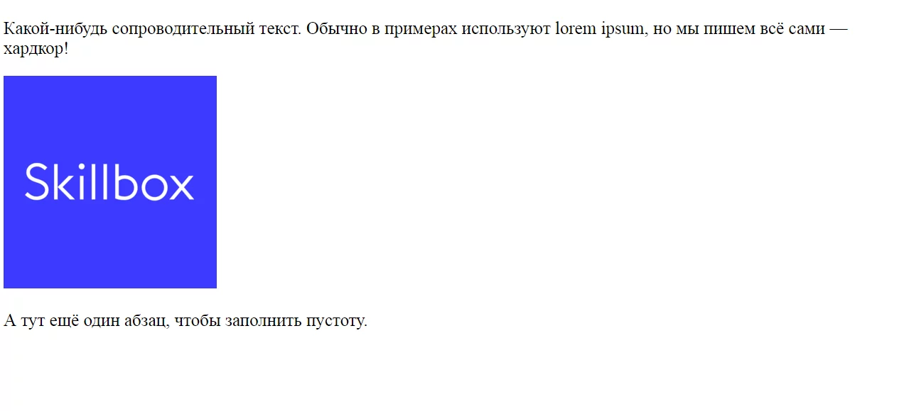

HTML(от английского HyperText Markup Language) — это язык гипертекстовой разметки страницы. Он используется для того, чтобы дать браузеру понять, как нужно отображать загруженный сайт.
Язык состоит из тегов — это своеобразные команды, которые преобразовываются в визуальные объекты в браузере пользователя. Например, тег <img> используется для размещения изображений на странице. У него есть обязательный атрибут src, в котором указывается ссылка на файл.
Вот как этот код выглядит в браузере:
Еще вы могли заметить тег <p>. Он используется для создания абзацев. Этот тег парный, то есть на конце абзаца должен стоять закрывающий </p>. Парные теги применяются для разметки блоков:
В них могут находиться другие блоки или отдельные элементы, такие как изображения.
Вот, например, что будет, если поместить код в блок <center>:
Принцип работы разметки следующий:
При этом браузер следует правилам преобразования, которые немного отличаются в зависимости от системы, версии и типа обозревателя. Если в коде допущена ошибка, то на странице может появиться что-то неожиданное. продолжение тут